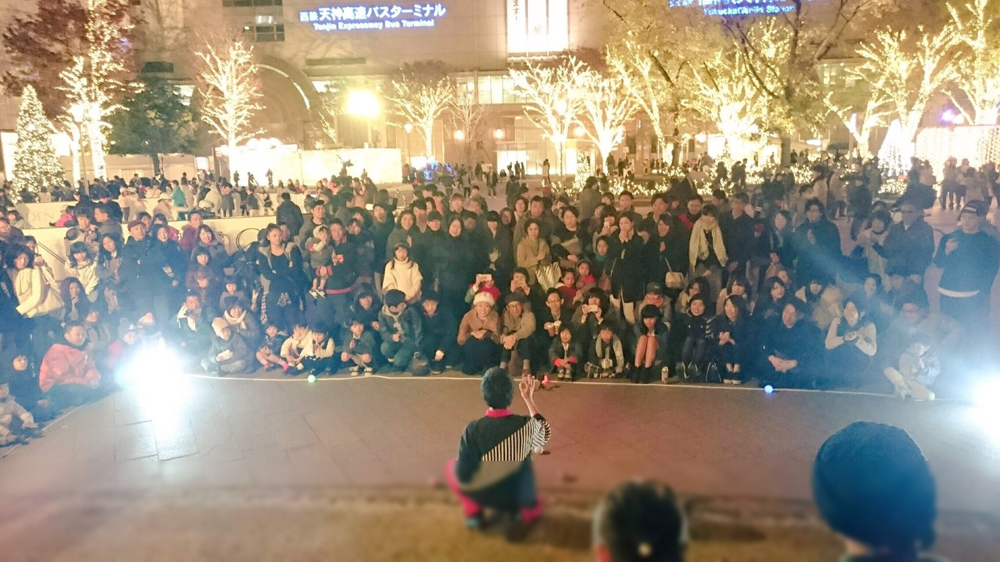
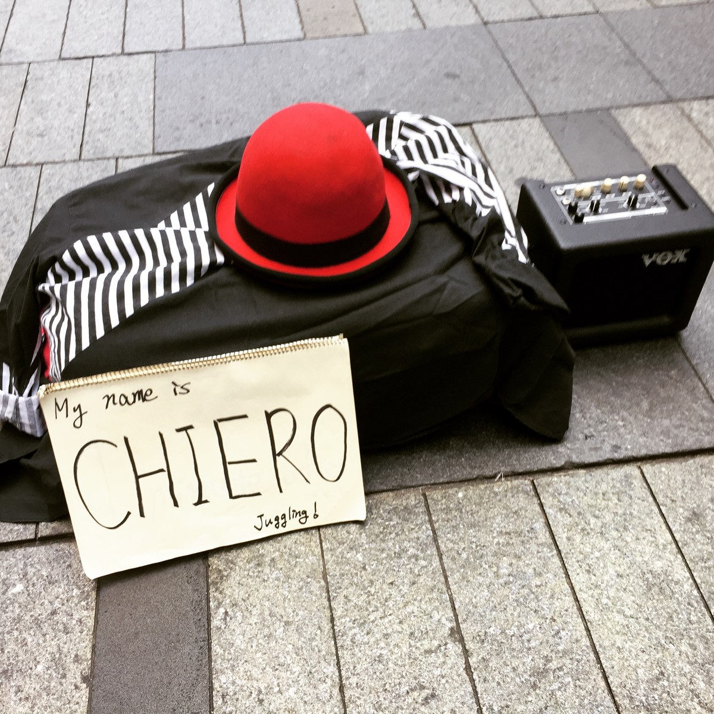
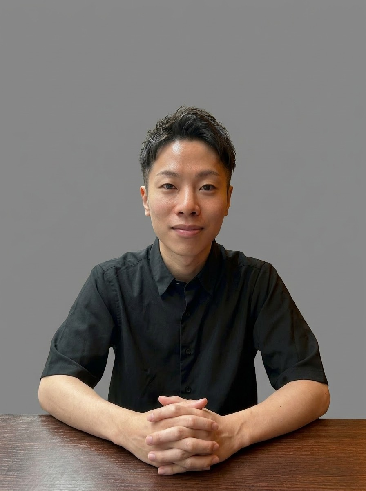

01
メディア運営・出版
Threadsの連作やSNSでの表現、
Kindleでの出版。
MEDIA & PUBLISHING
ABOUT CHIERO01 — MEDIA & PUBLISHING02 — CREATION WITH AI03 — ADVISORYTHE PERSON BEHIND CHIEROPHILOSOPHY
株式会社CHIEROFUKUOKA, JAPAN — EST. 2020
chiero.jp
CHIERO
株式会社CHIERO / CHIERO Inc.
FUKUOKA, JAPAN — EST. 2020
BUSINESS, CREATION & LIFE.
経営者との対話から、出版、作品づくりまで。自ら試し、つくり、届ける。
THINK.MAKE.MOVE.
?
!
WHAT IS CHIERO
読んで楽しめる言葉や、触れて分かる作品にする。
株式会社CHIEROは、メディア運営・出版・AIを使った制作を行う会社です。
WHAT WE DO
01
Threadsの連作やSNSでの表現、
Kindleでの出版。
MEDIA & PUBLISHING
02
数式アート「常世」や、
暮らしに寄り添うアプリ。
CREATION WITH AI
03
意思決定に伴走し、まだ言葉に
なっていない答えを一緒に言語化する。
ADVISORY
STORIES ON THREADS
街や土地を、ひとりの登場人物として読む連作。
歴史や文化、意外なつながりを、
笑いのある読み物にしています。
「47都道府県の面接」は連作名です。
東京さんの面接
Threads @chiero_piero
あなたの長所を教えてください。
人が多いことです。
では、短所は？
……人が多いことです。
『東京さんの面接』の要約
MAKE IT REACH
Threadsの連作、InstagramのAIを使った表現、noteでの発信。
SNS総フォロワー
0万人超
Instagram・TikTok・YouTube・Threads・Xの合算
（2026年9月・概数。フォローの重複を含む）
SNS累計再生
0億回超
複数SNSの累計
Threads 30日間の表示数
0万回超
アカウント全体・2026年9月7日取得
BOOKS / PUBLISHING
哲学・東洋思想から、AIの実務書まで。
考えるための言葉を、一冊ずつ本に。
Kindle著書
0冊超
40,000点
MATHEMATICAL ART
点と点のあいだに、生き物がいる。
形が消えても、数式は動いている。
数学という、物理的にはどこにも存在しない世界に
在るものを、式だけで画面に映した作品。
国際実験芸術祭 O-FEST 2026（モスクワ）公式選出
APPS & TOOLS
ねこ習慣
iPhoneアプリ
片づけを記録して、
ドットの猫「こはく」と暮らす。
ボウサイクル
家庭の防災備蓄を、3分で診断。
ほどく
短く書いて、AIと気持ちを整理する。
その先の声
望む場面を言葉にし、AIの声で聴き返す。
じぶんの取扱説明書
6つの問いから、大切にしたいことをカードに。
CONSULTING & COACHING
経営者の意思決定に伴走し、本人の中にある、
まだ言葉になっていない答えを、一緒に言語化する。
AIを事業のどこにどう入れるかも扱います。
CONSULTING
コンサルティング
AIで、事業を前に進めたい。
COACHING
コーチング
自分の望む方へ、進みたい。
提供内容・料金・条件は work.chiero.jp
THE PERSON BEHIND CHIERO
代表取締役
チエロ中田 光 / KO NAKATA



PRESS & RECOGNITION
CONTENT PROVIDED
日本テレビ
『ザ!鉄腕!DASH!!』
撮影した動画を提供
OFFICIAL SELECTION
O-FEST 2026
数式アート「常世」公式選出
SPONSORED INTERVIEW
新R25
事業支援についての取材記事
YOUTUBE
愛に生きる
小林社長の部屋
出演
ALUMNI
世界経済フォーラム
Global Shapers Community
COUNCILLOR
公益財団法人
石橋奨学会
評議員（2026年5月〜）
PROGRAM
東京大学
AI経営寄付講座
AI Business Insights 2026 修了
BESTSELLER
Amazonベストセラー1位
『初心者のための『葉隠』入門書』
（歴史・地理の参考図書・白書カテゴリ）
PHILOSOPHY
商いにも、創造にも、暮らしにも、本気で参加する。
株式会社CHIERO
chiero.jp
Threads / Instagram / X@chiero_piero
notenote.com/kounkt
Mailinfo@chiero.jp
© CHIERO Inc. FUKUOKA, JAPAN / EST. 2020
01
MEDIA & PUBLISHING
メディア運営・出版
02
CREATION WITH AI
AIを使った制作・開発
03
ADVISORY
経営者の相談役